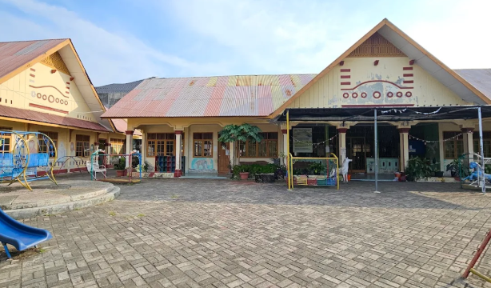
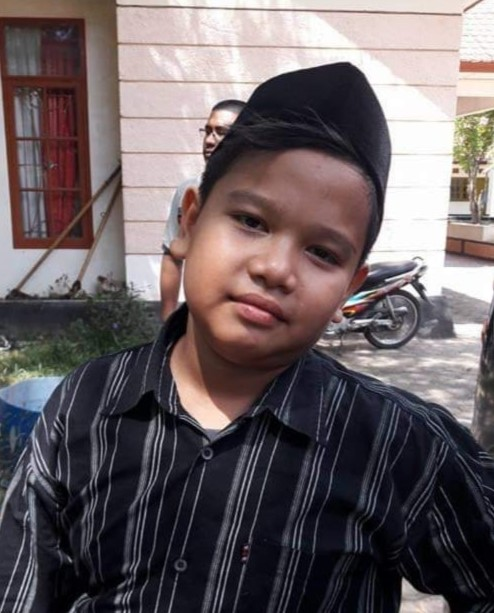
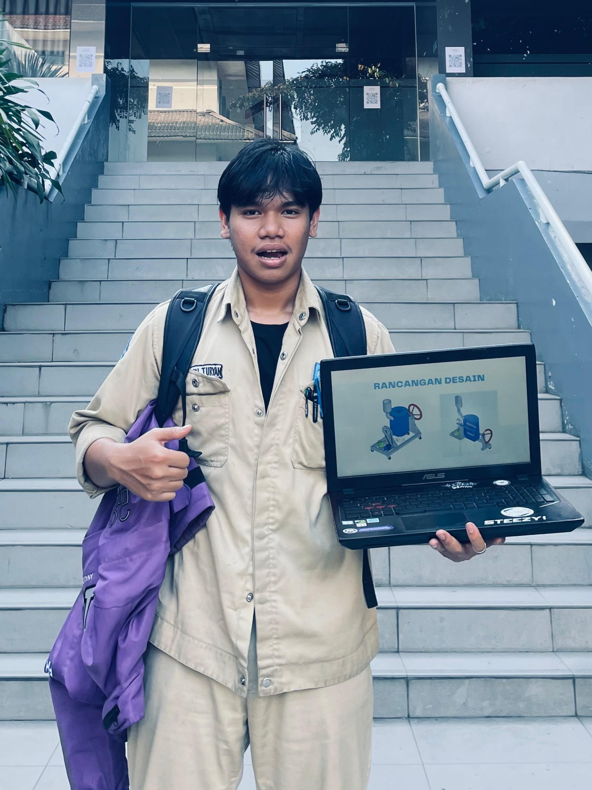

Riwayat Pendidikan

TK AMINAH
2009 - 2011
➔

MIN 8 KOTA BANDA ACEH
2011 - 2017
➔

SMP IK IMAM ANNAWAWI
2017 - 2020
➔
SMKN 2 BANDA ACEH
2020 - 2023
➔

PMS ITB
2023 - Sekarang
2009 - 2011
2011 - 2017
2017 - 2020
2020 - 2023
2023 - Sekarang